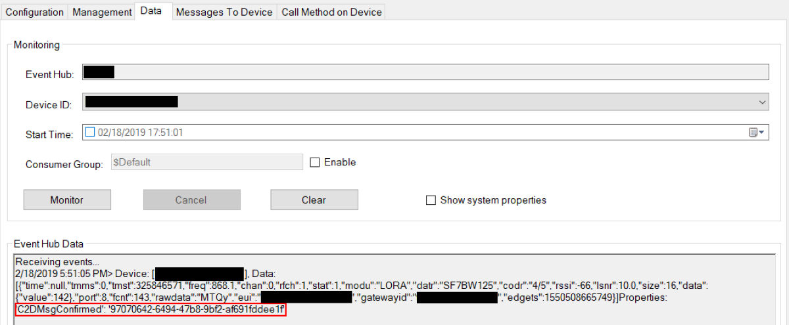

Quick Start
An Azure deployment template is available to deploy all the required Azure infrastructure and get you started quickly. If you'd rather deploy it manually please jump directly into the do it yourself section.
Prerequisites
The template supports x86 and ARM architectures and will automatically deploy the correct version to your gateway. Make sure to provide your gateway's reset pin in the dialog before the deployment.
Additionally, if your gateway use SPI_DEV version 1 the packet forwarder module will not work out-of-the-box. To fix this, simply add an environment variable 'SPI_DEV' set to the value 1 to the LoRaWanPktFwdModule module (SPI_DEV is set to 2 by default).
The LoRa device demo code in the Arduino folder is built only for Seeduino LoRaWan board and was not test with other Arduino LoRa boards.
Deployed Azure Infrastructure
The template will deploy in your Azure subscription the Following resources:
- IoT Hub
- Azure Function
- Redis Cache
- Application Insights
- Log Analytics (when opted in to use Azure Monitor)
Step-by-step instructions
-
Press on the button here below to start your Azure Deployment.

-
You will get to a page asking you to fill the following fields :
- Resource Group - A logical "folder" where all the template resource would be put into, just choose a meaningful name.
- Location - In which DataCenter the resources should be deployed. Make sure to choose a location where IoT Hub is available
- Unique Solution Prefix - A string that would be used as prefix for all the resources name to ensure their uniqueness. Hence, avoid any standard prefix such as "lora" as it might already be in use and might make your deployment fail. NB: the template is creating a Storage account with the value specified here, therefore the naming restrictions of Storage apply here.
- Edge gateway name - the name of your LoRa Gateway node in the IoT Hub.
- Deploy Device - Do you want demo end devices to be already provisioned (one using OTAA and one using ABP)? If yes set this to true, the code located in the Arduino folder would be ready to use immediately.
- Reset pin - The reset pin of your gateway (the value should be 7 for the Seed Studio LoRaWam, 25 for the IC880A)
- Region - In what region are you operating your device (currently only EU868 and US915 is supported)
- useAzureMonitorOnEdge - You can opt out of using Azure Monitor services for observability on IoT Edge.
The deployment would take c.a. 10 minutes to complete.
-
During this time, you can proceed to install IoT Edge to your gateway.
-
Once the Azure deployment is finished, connect your IoT Edge with the cloud as described in point 3. You can get the connection string by clicking on the deployed IoT Hub -> IoT Edge Devices -> Connection string, as shown in the picture below.
-
If your gateway is a Raspberry Pi, don't forget to enable SPI , (You need to restart your pi).
By using the docker ps command, you should see the Edge containers being deployed on your local gateway. You can now try one of the samples in the Arduino folder to see LoRa messages being sent to the cloud. If you have checked the Deploy Device checkbox you can use this sample directly "TransmissionTestOTAALoRa.ino" without provisioning the device first.
What does the template do?
The template provision an IoT Hub with a packet forwarder and a network server module already pre-configured to work out of the box. As soon as you connect your IoT Edge device in point 4 above, those will be pushed on your device. You can find template definition and Edge deployment specification here.
If you are using the the RAK833-USB, you'll need to adjust the template to use the right LoRaWan Packet Forwarder. You will find a full documentation in the LoRaWanPktFwdRAK833USB submodule.
Using a Proxy Server to connect your Concentrator to Azure
This is an optional configuration that should only be executed if your concentrator needs to use a proxy server to communicate with Azure.
Follow this guide to:
- Configure the Docker daemon and the IoT Edge daemon on your device to use a proxy server.
- Configure the
edgeAgentproperties in theconfig.yamlfile on your device. - Set environment variables for the IoT Edge runtime in the deployment manifest.
- Add the
https_proxyenvironment variable to theLoRaWanNetworkSrvModulein IoT Hub.
LoRa Device provisioning
A LoRa device is a normal IoT Hub device with some specific device twin tags. You manage it like you would with any other IoT Hub device. To avoid caching issues you should not allow the device to join or send data before it is provisioned in IoT Hub. In case that you did plese follow the ClearCache procedure that you find below.
ABP (personalization) and OTAA (over the air) provisioning
You can provision the devices manually in the Azure portal or better use the provided Command Line Interface Provisioning Tool to list, query, verify, add, update, and remove devices in IoT Hub.
It is also recommended to use the CLI tool to verify manually added or edited LoRa devices in IoT Hub to ensure the device twin settings are all correct and will work.
To manually provision:
- Login in to the Azure portal go to IoT Hub -> IoT devices -> Add
- Use the DeviceEUI as DeviceID -> Save
- Click on the newly created device
-
Click on Device Twin menu
-
Add the followings desired properties for OTAA:
"desired": {
"AppEUI": "App EUI",
"AppKey": "App Key",
"GatewayID": "",
"SensorDecoder": ""
},
Or the followings desired properties for ABP:
DevAddr must be unique for every device! It is like an ip address for lora.
"desired": {
"AppSKey": "Device AppSKey",
"NwkSKey": "Device NwkSKey",
"DevAddr": "Device Addr",
"SensorDecoder": "",
"GatewayID": ""
},
It should look something like this for ABP:
{
"deviceId": "BE7A00000000888F",
"etag": "AAAAAAAAAAs=",
"deviceEtag": "NzMzMTE3MTAz",
"status": "enabled",
"statusUpdateTime": "0001-01-01T00:00:00",
"connectionState": "Disconnected",
"lastActivityTime": "2018-08-06T15:16:32.0658492",
"cloudToDeviceMessageCount": 0,
"authenticationType": "sas",
"x509Thumbprint": {
"primaryThumbprint": null,
"secondaryThumbprint": null
},
"version": 324,
"tags": {
},
"properties": {
"desired": {
"AppSKey": "2B7E151628AED2A6ABF7158809CF4F3C",
"NwkSKey": "1B6E151628AED2A6ABF7158809CF4F2C",
"DevAddr": "0028B9B9",
"SensorDecoder": "",
"GatewayID": "",
"$metadata": {
"$lastUpdated": "2018-03-28T06:12:46.1007943Z"
},
"$version": 1
},
"reported": {
"$metadata": {
"$lastUpdated": "2018-08-06T15:16:32.2689851Z"
},
"$version": 313
}
}
}
- Click Save
- Turn on the device and you are ready to go
Optional device properties
Customization's to lora devices are set by creating specific twin desired properties on the device. The following customization's are available:
| Name | Description | Configuration | When to use |
|---|---|---|---|
| Enable/disable downstream messages | Allows disabling the downstream (cloud to device) for a device. By default downstream messages are enabled | Add twin desired property "Downlink": false to disable downstream messages. The absence of the twin property or setting value to true will enable downlink messages. |
Disabling downlink on devices decreases message processing latency, since the network server will not look for cloud to device messages when an uplink is received. Only disable it in devices that are not expecting messages from cloud. Acknowledgement of confirmed upstream are sent to devices even when downlink is set to false |
| Preferred receive window | Allows setting the device preferred receive window (RX1 or RX2). The default preferred receive window is 1 | Add twin desired property "PreferredWindow": 2 sets RX2 as preferred window. The absence of the twin property or setting the value to 1 will set RX1 as preferred window. |
Using the second receive window increases the chances that the end application can process the upstream message and send a cloud to device message to the lora device without requiring and additional upstream message. Basically completing the round trip in less than 2 seconds. |
| Message Deduplication | Allows controlling the handling of duplicate messages received by multiple gateways.The default is None. | Add twin desired property "Deduplication": "Drop" to instruct dropping duplicate messages on the gateway, set it to "Mark" if you want to mark messages to the IotHub with "dupmsg": true in case the message was already processed. Example payload: Device: [47AAC86800430028], Data:[{"time":null,"tmms":0,"tmst":3201165987,"freq":868.3,"chan":1,"rfch":1,"stat":1,"modu":"LORA","datr":"SF7BW125","codr":"4/5","rssi":-61,"lsnr":8.2,"size":14,"data":{"value":1},"port":10,"fcnt":2,"rawdata":"QImRWQIAAgAK8I3rbqc=","eui":"47AAC86800430028","gatewayid":"simulatorpaschule1","edgets":1550501633879,"dupmsg": true}] |
Deduplication on the gateway allows you to control how you want to handle duplicate messages in a multi gateway environment without having to add additional logic on the receiving or processing end. |
| RX1 Datarate Offset | Allows setting an offset between received Datarate and retransmit datarate as specified in the LoRa Specifiations. Valid for OTAA devices. If an invalid value is provided the network server will use default value 0. | Add twin desired property "RX1DROffset": # where # is a valid specification number to create an offset of # between received Datarate and Transmit Datarate. Please find the full table in the LoRa Specification example: upstream DR2, with a RX1DROffset of 1 will result in a transmission on DR1 |
Setting an offset between receive and transmit could help deal with very saturated network. Warning, this is an advanced option, please only use if you are aware of your network specification. |
| RX2 Datarate | Allows setting a custom Datarate for second receive windows. Valid for OTAA devices. If an invalid value is provided the network server will use default value 0 (DR0). | Add twin desired property "RX2DataRate": # where # is a valid specification number to set the RX2 DR to DR#. Example: if a value of 2 is provided, second receive windows will use DR2 instead of the default DR0. |
Setting a custom RX2 Datarate could help your RX2 devices to benefit of higher datarate. Warning, this is an advanced topic, changing it to higher datarate could be very dangerous and result in RX2 becoming unusable if the devices are not within reach of the specified datarate. Usage of this feature is especially not recommanded if ADR is enabled. |
| RX Delay | Allows setting a custom wait time between receiving and transmission as specified in the specification. | Add twin desired property "RXDelay": # where # is a valid specification number to set the RxDelay to wait for # seconds. Note that values 0 and 1 are default. Example: if a value of 2 is provided, The RX1 transmit windows will open 2 second after receiving the message. RX2 windows will always stay 1 second after RX1 |
Setting a custom RXDelay could be usefull in case of long processing time, this could give more time to the server/device to compute their answers and lower the risk of missing the transmission windows. The defaults should work in most production scenarios, we recommend to use the default unless you have an explicit need for a longer delay |
| Disable ABP relax mode | Allows to disable the relax mode when using ABP. By default relaxed mode is enabled | Add twin desired property "ABPRelaxMode": false will disable relaxed mode. |
Disable the relaxed mode to minimize reply attack possiblitites. Allowing relaxed mode, allows a device to reset framecounters on the server by specifying 0/1. Important: in production deployments, we recommend turning relaxed mode off |
| Specify frame counter up start value | Allows to explicitly specify a frame counter up start value. If the device joins, this value will be used to validate the first frame and initialize the server state for the device. | Add twin desired property "FCntUpStart": 10 will set the frame counter up to 10. |
If you disable ABP relax mode (see ABPRelaxMode) you usually want to set this value. In general, if your device starts with anything but 0 or 1, you specify the value here. If your device has relaxed mode disabled or uses 32 bit counters and got out of sync, this is a way to re-synchronize the counter between the server and the device. see 32bit counter support and reset counter |
| Specify frame counter down start value | Allows to explicitly specify a frame counter down start value. | Add twin desired property "FCntDownStart": 10 will set the frame counter up to 10. |
If your device expects a frame counter down other than 1 in the first message, use this to configure the value |
| 32bit counter support | Allow the usage of 32bit counters on your device. | Add twin desired property "Supports32BitFCnt": true will enable 32bit support for your device. |
Your device will keep a 32bit counter but only sends the lower 16bit over the wire. The server will infere the upper 16bit by looking at the traffic. The additional 2 bytes increase security and minimize the reply atack surface |
| Reset counter | Allows to reset the frame counters to the FCntUpStart/FCntDownStart values respectively. | Add twin desired property "FCntResetCounter": 1 will use the values specified in "FCntUpStart" and "FCntDownStart" to set the framecounters to the desired values. The "FCntResetCounter" in the desired properties has to be higher than the value in the reported properties for this to take effect. If there is no value in the reporte properties yet, it will be applied and the reported properties get updated, as soon as the counters got updated. |
If your device got out of sync (missed frames larger than the specified MAX_FCNT_GAP in the specification (16384 as of this writing)), you can re-synchronize the counters using this reset mechanism. |
| Device Connection Timeout | Allows defining a sliding expiration to the connection between the leaf device and IoT/Edge Hub. The default is none, which causes the connection to not be dropped | Add twin desired property "KeepAliveTimeout": 60 to add a 60 seconds sliding expiration. The minimum value is 60 seconds. |
Enabling device connection timeout allows a large device deployment to have a better usage of gateway resources by limiting open connections. We don't recommend enabling connection timeout in devices that send confirmed messages and/or expected cloud to device messages, as the reconnection time might prevent the network server from responding in time. |
Important: changes made to twin desired properties in devices that are already connected will only take effect once the network server is restarted or cache is cleared.
Device Reported Properties
This section provide a brief description of the device reported properties you can see appear on your device.
| Name | Description | Used By |
|---|---|---|
| DataRate | The Device Current Datarate | This value will be only reported if you are using Adaptive Data Rate |
| TxPower | The Device Current Transmit Power | This value will be only reported if you are using Adaptive Data Rate |
| NbRep | The Device Current repetition when transmitting. E.g. if set to two, the device will transmit twice his upstream messages | This value will be only reported if you are using Adaptive Data Rate |
| RX2DataRate | The Device Current Rx2Datarate | This value will be only reported if you set a Custom property as specified in the previous section. The two values might differ as a device value is currently updated only as part of the join process. |
| RX1DROffset | The Device Current RX1DROffset | This value will be only reported if you set a Custom property as specified in the previous section. The two values might differ as a device value is currently updated only as part of the join process. |
| RXDelay | The Device Current RXDelay | This value will be only reported if you set a Custom property as specified in the previous section. The two values might differ as a device value is currently updated only as part of the join process. |
Decoders
The SensorDecoder tag is used to define which method will be used to decode the LoRa payload. If you leave it out or empty it will send the raw decrypted payload in the data field of the json message as Base64 encoded value to IoT Hub.
If you want to decode it on the Edge you have the following two options:
-
Specify a method that implements the right logic in the
LoraDecodersclass in theLoraDecoders.csfile of theLoRaWan.NetworkServer. -
Adapt the DecoderSample which allows you to create and run your own LoRa message decoder in an independent container running on your LoRa gateway without having to edit the main LoRa Engine. This description shows you how to get started.
In both cases, we have already provided a simple decoder called "DecoderValueSensor" that takes the whole payload as a single numeric value and constructs the following json output as a response (The example of an Arduino sending a sensor value as string (i.e. "23.5") is available in the Arduino folder):
{
.....
"data": {"value": 23.5}
.....
}
If you want the raw decrypted payload to be sent to IoT Hub as Hex encoded value in the data field of the json message, you can set the decoder to "DecoderHexSensor". The byte array {1, 2, 4, 8, 255} for example will be converted to "01020408FF" by this built-in decoder.
{
.....
"data": {"value": "01020408FF"}
.....
}
To add the sample "DecoderValueSensor" or "DecoderHexSensor" to the sample LoRa device configured above, change it's desired properties in IoT Hub as follows for option 1:
"desired": {
"AppEUI": "App EUI",
"AppKey": "App Key",
"GatewayID": "",
"SensorDecoder": "DecoderValueSensor"
},
or as follows for option 2:
"desired": {
"AppEUI": "App EUI",
"AppKey": "App Key",
"GatewayID": "",
"SensorDecoder": "http://your_container_name/api/DecoderValueSensor"
},
The "DecoderValueSensor" and "DecoderHexSensor" decoders are not a best practice but it makes it easier to experiment sending sensor readings to IoT Hub without having to change any code.
if the SensorDecoder tag has a "http" in it's string value, it will forward the decoding call to an external decoder, as described in option 2 above, using standard Http. The call expects a return value with the same format as the json here above or an error string.
Cache Clearing
Due to the gateway caching the device information (tags) for 1 day, if the device tries to connect before you have provisioned it, it will not be able to connect because it will be considered a device for another LoRa network. To clear the cache and allow the device to connect follow these steps:
- IoT Hub -> IoT Edge -> click on the device ID of your gateway
- Click on LoRaWanNetworkSrvModule
- Click Direct Method
- Type "ClearCache" on Method Name
- Click Invoke Method
Alternatively you can restart the Gateway or the LoRaWanNetworkSrvModule container.
Monitoring and Logging
There is a logging mechanism that outputs valuable information to the console of the docker container and can optionally forward these messages to IoT Hub.
You can control logging with the following environment variables in the LoRaWanNetworkSrvModule IoT Edge module:
| Variable | Value | Explanation |
|---|---|---|
| LOG_LEVEL | "1" or "Debug" | Everything is logged, including the up- and downstream messages to the packet forwarder. |
| "2" or "Information" | Errors and information are logged. | |
| "3" or "Error" | Only errors are logged. (default if omitted) |
For production environments, the LOG_LEVEL should be set to Error.
Setting LOG_LEVEL to Debug causes a lot of messages to be generated. Make sure to set LOG_TO_HUB to false in this case.
| Variable | Value | Explanation |
|---|---|---|
| LOG_TO_HUB | true | Log info are sent from the module to IoT Hub. |
| false | Log info is not sent to IoT Hub (default if omitted) |
You can use VSCode or Azure IoT CLI extension to monitor the log messages directly in IoT Hub if LOG_TO_HUB is set to true.
Log in to the gateway and use sudo docker logs LoRaWanNetworkSrvModule -f to follow the logs if you are not logging to IoT Hub.
| Variable | Value | Explanation |
|---|---|---|
| LOG_TO_CONSOLE | true | Log to docker logs (default if omitted) |
| false | Does not log to docker logs |
Local Processing and Routing
By default the network server does not use the local edge queue (edgeHub), sending directly messages to IoT Hub. If you need to do local processing, please set the following setting to true on the LoRaWanNetworkSrvModule.
| Variable | Value | Explanation |
|---|---|---|
| ENABLE_GATEWAY | true | Messages go to edgeHub and then to IoT Hub |
| false | Messages go directly to IoT Hub, skipping local edgeHub Queue |
Customize the solution & Deep dive
Have a look at the LoRaEngine folder for more in details explanation.
Cloud to device message
Sending cloud to device messages in the solution uses the following JSON format to describe the downstream:
{
"devEUI": "string",
"fport": integer,
"confirmed": boolean,
"payload": "string",
"rawPayload": "string",
"macCommands":[
{ "cid": "string" }
]
}
Fields
| Field | Type | Description | Required |
|---|---|---|---|
| devEUI | String | Device EUI | Only when sending messages to class C devices |
| fport | Integer | Payload fport, must be between 1 and 223 if you are sending data. 0 if it is Mac command | Yes |
| confirmed | Boolean | Indicates if an ack is required from the LoRa device. By default false |
No |
| payload | String | Payload as text | Either payload or rawPayload must be provided |
| rawPayload | String | Payload as byte encoded in base64 format | Either payload or rawPayload must be provided |
| Mac command cid | String | Mac command identifier. The mac command DevStatusCmd is implemented, allowing you to request a device its status |
Sending messages using the Azure Function
Sending messages to class A devices is a simple task, since those devices will send an upstream link giving the network server the chance of looking in Azure IoT Hub cloud to device message queue for pending downlink messages. Class C devices are complexer because they, for the most part, are only listening for messages. Using the cloud to message queue would not be very effective as it would require the network server to keep a client connection that would rarely be used, wasting resources. In this solution sending messages to class C devices is available through a direct method in the network server. However, in a multiple gateway scenario there is still the need to resolve the closest gateway before calling the relevant network server.
The companion Azure Function deployed with the solution has a HTTP based endpoint to send messages to LoRa devices. It takes away the complexity of figuring out the device type and closest gateway.
The function endpoint looks like https://YOUR-FUNCTION-NAME.azurewebsites.net/api/cloudtodevicemessage/{devEUI}?code=YOUR-FUNCTION-APP-CODE
To send a message to a device send a POST request including the content as the body:
curl -d '{"rawPayload": "AAA=","fport": 1}' -H "Content-Type: application/json" https://YOUR-FUNCTION-NAME.azurewebsites.net/api/cloudtodevicemessage/YOUR-DEVEUI?code=YOUR-FUNCTION-APP-CODE
Should return
{"devEUI":"47AAC86800430028","messageID":"10c3e09f-0e58-4d28-8da1-37bb3fcf9435","deviceClassType":"A"}
Class A devices
The solution support sending Cloud to device (C2D) messages to LoRa class A devices using standard IoT Hub SDKs. The message body should follow the following contract:

The following tools can be used to send cloud to devices messages from Azure :
- Azure Portal → IoT Hub → Devices → message to device
- Azure IoT CLI Extension
- Visual Studio Code IoT Hub Extension
In confirmed messages a ConfirmedDataDown message will be send to the LoRa device (as in picture above and below). You can enable additional message tracking options by setting the C2D message id to a value (C2D message ID is automatically populated with the Device Explorer tool used in the image below).

As soon as the device acknowledges the message, it will report it in the logs and as a message property named 'C2DMsgConfirmed' on a message upstream (or generate an empty message in case of an empty ack message). The value of the message property will be set to the C2D message id that triggered the response if not null, otherwise to 'C2D Msg Confirmation'. You can find here below a set of picture illustrating the response when the C2D message id was sent to the value '4d3d0cd3-603a-4e00-a441-74aa55f53401'.

Class C devices
To send downstream messages to class C devices the following is required:
- The device twin desired property
"ClassType": "C"must be set. - The device must send at least one message upstream.
Once the requirements are met, sending downstream messages is achieved by calling the direct method CloudToDeviceMessage in the module client. In Azure Portal:
- Azure Portal → IoT Hub → IoT Edge → LoRaWanNetworkSrvModule (under Modules) → Direct Method
- Visual Studio Code IoT Hub Extension
The method name is CloudToDeviceMessage and the payload is the JSON following the structure previously described. Don't forget to set a value to the devEUI property.

MAC Commands
The Solution has an initial support for MAC Commands. Currently only the command Device Status is available. The command will return the device status (battery and communication margin). To try it, send a Cloud to Device message with the following format:
{
"fport": 0,
"macCommands": [
{ "cid": "DevStatusCmd" }
]
}